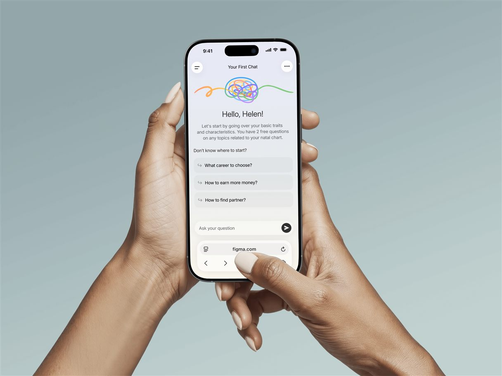
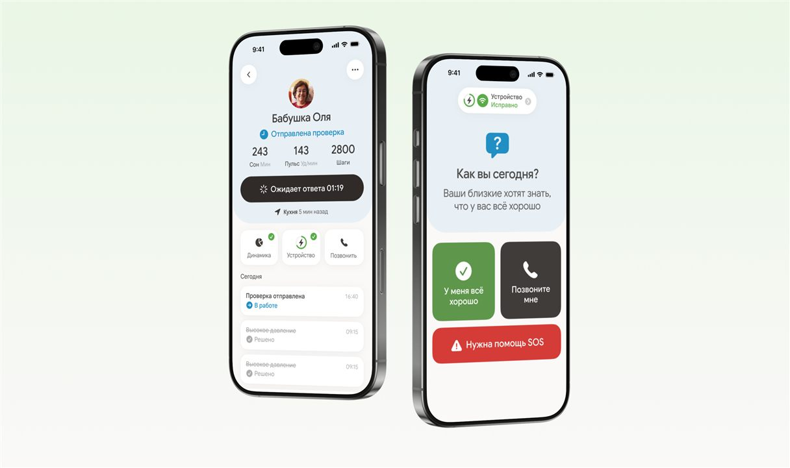
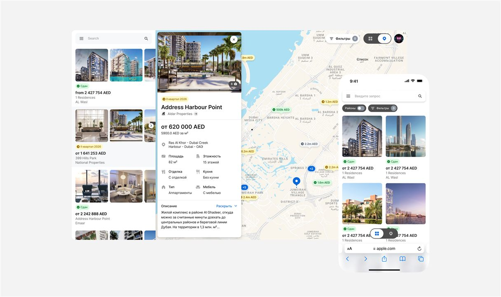
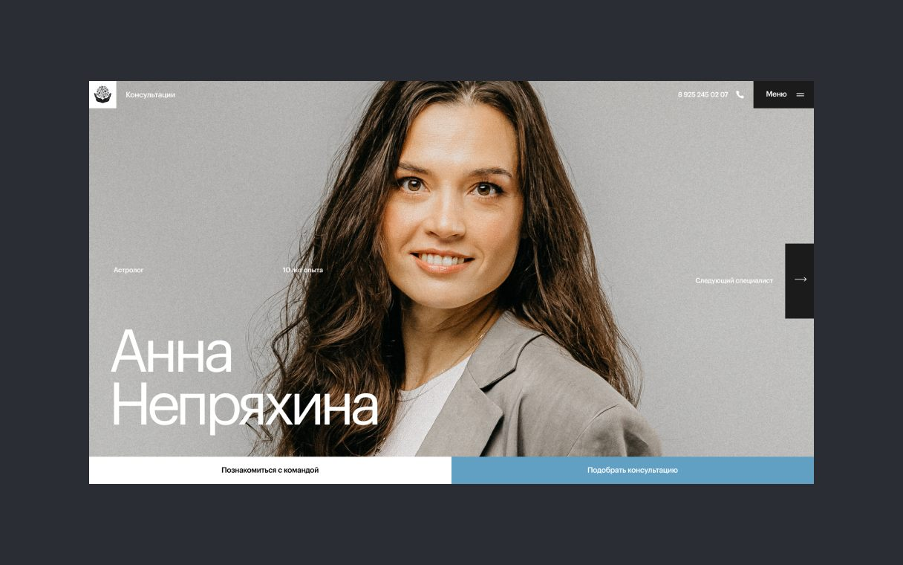
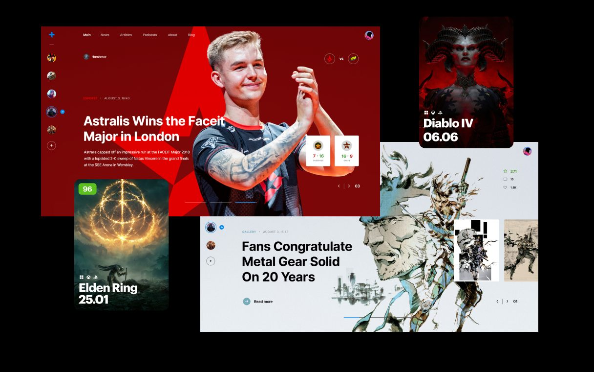
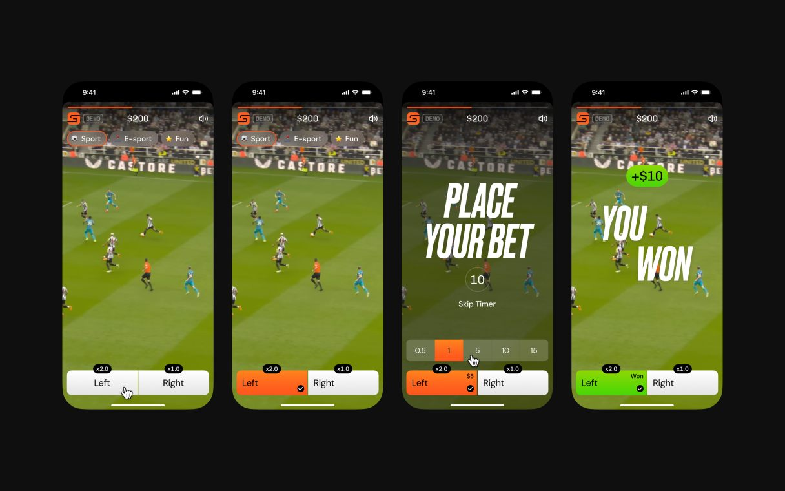
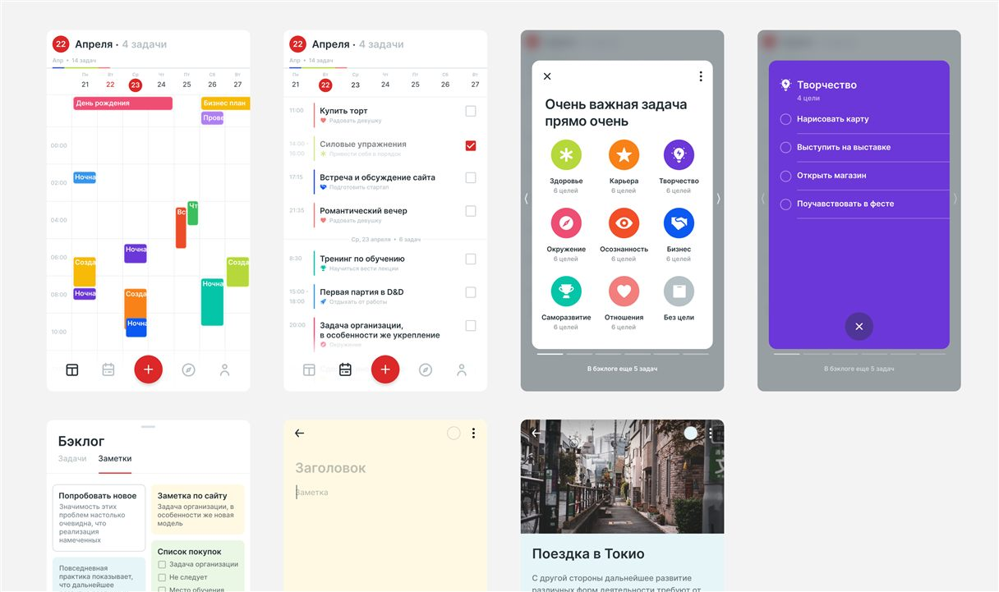
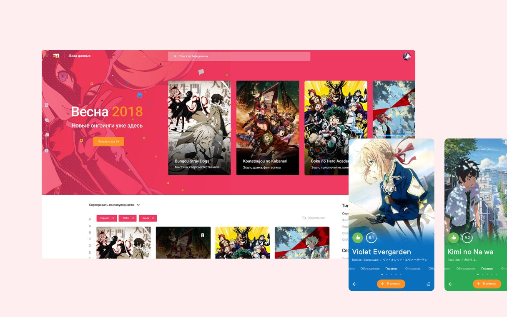

Chronos
2019-2026Led design of a professional astrology platform from initial concept through a fully realized two-sided B2B/B2C ecosystem, growing into a leadership role over a team of four designers.
Led design of a professional astrology platform from initial concept through a fully realized two-sided B2B/B2C ecosystem, growing into a leadership role over a team of four designers.

A self-help AI companion web app designed from scratch for the international market: full user flows, wireframes, design concepts, high-fidelity screens, and developer handoff.

Designed and delivered an intuitive app to help users care for their close family members, featuring personalized reminders and health tracking.
Designed and launched a platform linking vet clinics, breeding kennels, and animal shelters to streamline data sharing with pet owners.

Designed a responsive web application for real estate agents in Dubai to browse and manage property listings, built for both desktop and mobile use.

Designed a custom website for an astrology collective, presenting a group of professionals and their individual services under a unified visual identity.

Built and shipped design for a self-help AI companion app

Built and shipped design for a self-help AI companion app

Built and shipped design for a self-help AI companion app

Built and shipped design for a self-help AI companion app